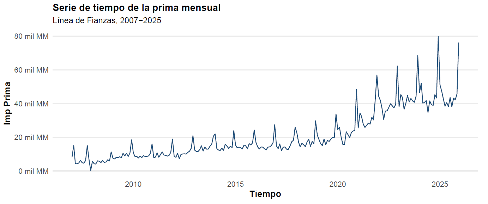
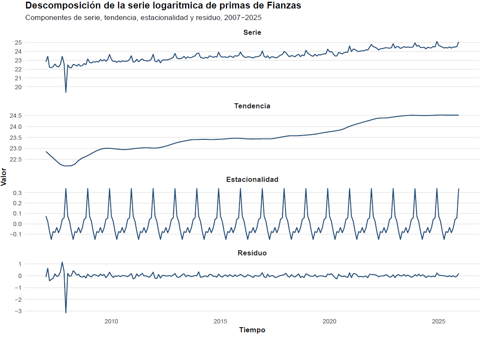
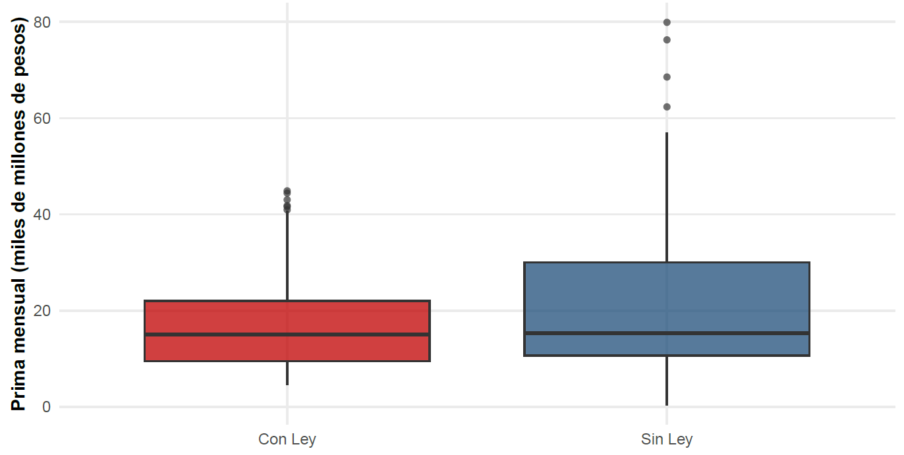
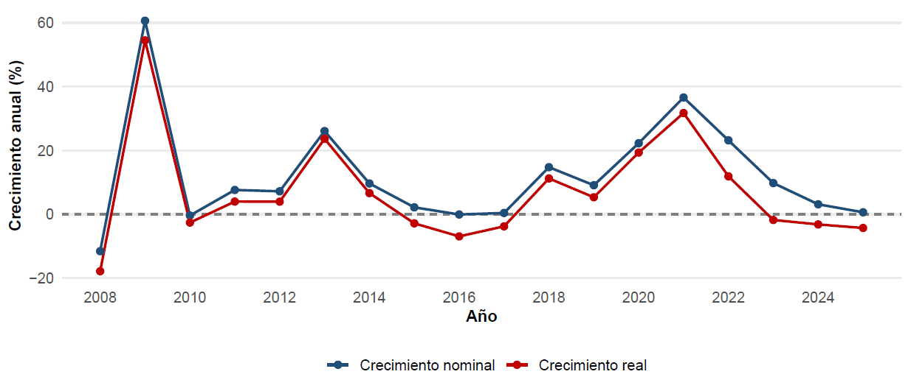

DATOS Y FILTROS
La base original contiene registros individuales. Para el análisis de series de tiempo, la información se llevó a nivel mensual sumando la producción de primas de cada periodo.
Se filtró únicamente la línea de Fianzas, ya que es la línea central del proyecto.
Se excluyeron los ramos 55 – RCE Contratos PPP y 57 – PA.PPP.
Se utilizaron variables como Imp Prima, Imp Prima Cuota.
Se revisaron variables como Código y Ramo, Sucursal Agrupada, Línea +, mes y año.
| Indicador | Resultado |
|---|---|
| Total de meses analizados | 228 |
| Periodo inicial | Enero de 2007 |
| Periodo final | Diciembre de 2025 |
| Meses sin dato de prima | 0 |
Después de agrupar la información por mes, la serie final quedó completa. Por esta razón, no fue necesario aplicar técnicas de imputación para la modelación.
ANÁLISIS EXPLORATORIO
A partir de la serie mensual de primas de Fianzas, se revisó su comportamiento general, se aplicó una transformación logarítmica para suavizar los picos y luego se realizó una descomposición STL para separar sus principales componentes.

La producción de primas presenta cambios importantes entre meses y muestra algunos picos altos en ciertos periodos.
Se aplicó para suavizar esos picos y trabajar con una serie más estable antes de la modelación.
Esta descomposición permite separar la serie en tendencia, estacionalidad y residuos.

Muestra que la producción de primas ha venido creciendo con el paso de los años, especialmente desde 2020.
Se observa un patrón que se repite cada año, con mayor producción hacia diciembre.
Ayudan a identificar meses que se alejaron del comportamiento esperado, como algunos valores atípicos en 2008 y 2020-2021.
LEY DE GARANTÍAS
Para evaluar los periodos electorales, se creó una variable exógena que identifica los meses con Ley de Garantías y permite comparar su comportamiento frente a los meses sin Ley.
Mes con Ley
49 meses
Mes sin Ley
179 meses
Esta variable se incorpora luego en el modelo SARIMAX para evaluar el posible efecto de la Ley sobre las primas.

Comparación entre meses con Ley y meses sin Ley.
| Indicador | Resultado |
|---|---|
| Promedio con Ley | $18.880 millones |
| Promedio sin Ley | $21.466 millones |
| Diferencia promedio | -12,05% |
| Diferencia mediana | -1,4% |
| Prueba | Resultado | Lectura |
|---|---|---|
| Shapiro-Wilk | No normal | Se usa Wilcoxon como apoyo |
| t-test | p = 0,4738 | Sin diferencia significativa |
| Wilcoxon | p = 0,4604 | Sin diferencia significativa |
Los meses con Ley presentan un promedio menor de primas, pero las pruebas estadísticas no muestran una diferencia significativa entre los dos grupos. Por eso, la Ley muestra una señal descriptiva, aunque no explica por sí sola todo el comportamiento de la producción.
ANÁLISIS EXPLORATORIO
Se ajustaron las primas por inflación para saber si el crecimiento observado corresponde realmente a mayor producción o si una parte se explica por el aumento general de precios.

En varios años, el crecimiento real fue menor que el crecimiento nominal. Esto muestra que una parte del aumento observado se explica por la inflación.
Desde 2023 el crecimiento real fue negativo. En 2025, el crecimiento nominal fue de 0,6%, mientras que el real fue de -4,3%.
Aunque las primas crecieron en pesos, al descontar la inflación se observa que en los últimos años la línea ha perdido fuerza.
CIERRE DEL MÓDULO
Con el análisis exploratorio se pudo ver que la Ley de Garantías puede estar relacionada con una menor producción promedio, pero también se encontró que las primas tienen otros comportamientos importantes que no se pueden ignorar.
La producción no se mantiene igual en el tiempo; cambia entre años y ha tenido un crecimiento más fuerte en algunos periodos.
Hay meses que normalmente tienen mayor producción, especialmente hacia el cierre del año.
La Ley puede influir en las primas, pero no se puede analizar sola porque la serie también tiene tendencia y patrones mensuales.
Por eso, después del análisis exploratorio se pasa a la modelación. La idea es usar modelos que permitan analizar al mismo tiempo la tendencia, la estacionalidad y la Ley de Garantías, para generar una predicción más completa para 2026.